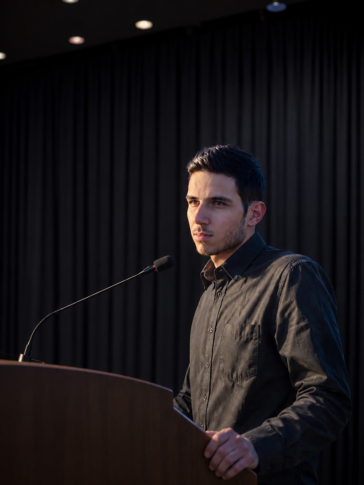
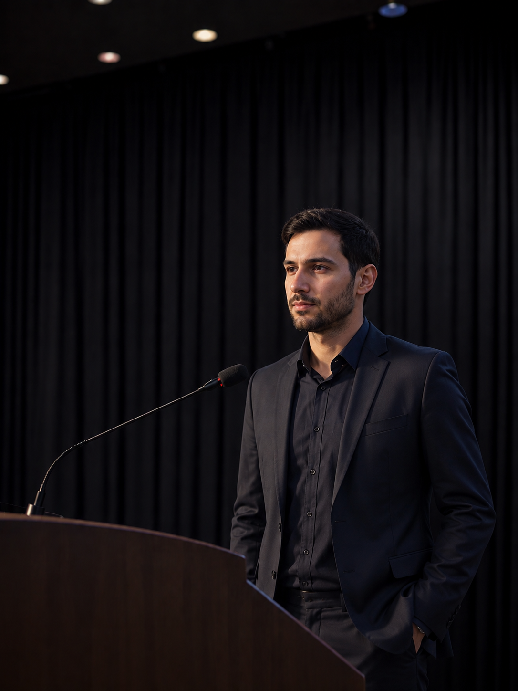

نشست تخصصی «آینده خودکارسازی صنعتی و کارخانههای هوشمند» در تهران برگزار شد
نشست تخصصی «آینده خودکارسازی صنعتی و کارخانههای هوشمند» با حضور جمعی از دانشجویان، پژوهشگران و فعالان صنعت برگزار شد. در این رویداد سه سخنران از دیدگاههای مختلف به بررسی روندهای نوین در حوزه کنترل، هوشمندسازی و تحول دیجیتال صنایع پرداختند.
سخنرانی اول

در این نشست، محمد کلهری، دانشجوی مهندسی برق و پژوهشگر حوزه سامانههای کنترل، بر اهمیت استفاده از واژگان فارسی در علوم و فناوری تأکید کرد.
«پیشرفت فناوری تنها به ساخت تجهیزات جدید محدود نمیشود؛ زبان نیز بخشی از فناوری است...»
کلهری همچنین نقش آموزش و تولید محتوای تخصصی فارسی را مهم دانست.
سخنرانی دوم

در ادامه، مهندس آرش رضایی به بررسی تحول کارخانههای سنتی به هوشمند پرداخت.
«رقابت آینده میان کارخانههایی خواهد بود که بتوانند دادهها را به تصمیم تبدیل کنند...»
رضایی بر آموزش نیروی انسانی در کنار توسعه فناوری تأکید کرد.
سخنرانی سوم
در بخش پایانی، دکتر فاطمه موسوی درباره هوش مصنوعی و اینترنت اشیا سخنرانی کرد.
«ترکیب هوش مصنوعی و IoT میتواند مدیریت فرایندها را متحول کند...»
موسوی به چالشهای امنیت سایبری نیز اشاره کرد.
جمعبندی: نشست با پرسش و پاسخ به پایان رسید.